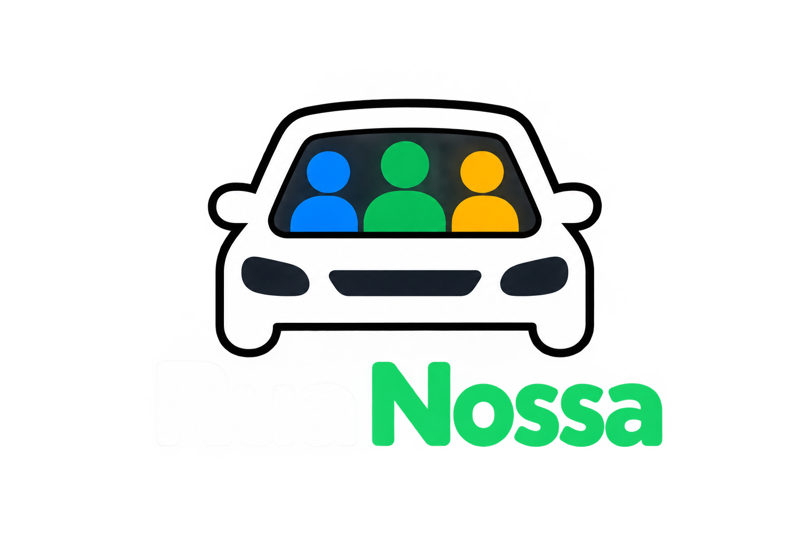

Sua viagem, nosso caminho. Compare caronas, descubra conexões e encontre a melhor rota para seguir junto.
Tema
Buscando as melhores conexões…Isso pode levar alguns segundos.

Sua viagem, nosso caminho. Compare caronas, descubra conexões e encontre a melhor rota para seguir junto.